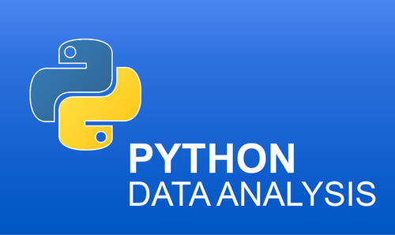

This is my data science project. In this project I developed a machine learning model using logistic regression algorithm to predict whether
the person has benign or malignant cancer. I went a step further to develop a web based AI App with simple user interface using streamlit library that can simplify the process of entering data
and checking if the person is sick or not.
Click on View Project to get access to the web project or you can click the link below to see the project in github.
.

This is my data science project. In this project I developed a machine learning model using logistic regression algorithm to predict whether
the person has heart problems or not. I went a step further to develop a web based AI App using streamlit library that can simplify the process of entering data
and checking if the person is sick or not.
Click on View Project to get access to the web project or you can click the link below to see the project in github.
.


In this project, I visualized AirBnB data which ofcourse I got from kaggle website and came up with conclusions and recommendations.
In this project, I analysed the Netflix Dataset that contains set of all Netflix movies from 2008 to 2021
I cleaned the data, and conducted exploratory analysis using pandas library. Feel free to view the entire project